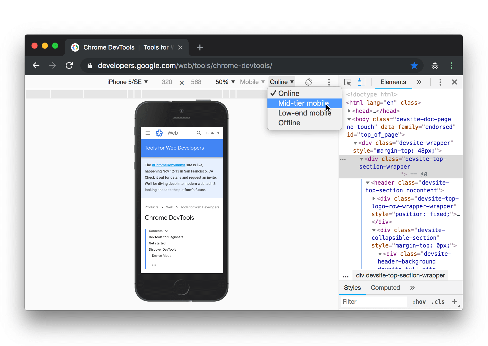

Home > Product > Web > Tools for Web Developers > Chrome DevTools 
Chrome DevTools
Chrome DevTools is a set of web developer tools built directly into the Google Chrome browser. DevTools can help you edit pages on-the-fly and diagnose problems quickly, which ultimately helps you build better websites, faster.
Check out the video for live demonstrations of core DevTools workflows, including debugging CSS, prototyping CSS, debugging JavaScript, and analyzing load performance.
Open DevTools
There are many ways to open DevTools, because different users want quick access to different parts of the DevTools UI.
- When you want to work with the DOM or CSS, right-click an element on the page and select Inspect to jump into the Elements panel. Or press Command+Option+C (Mac) or Control+Shift+C (Windows, Linux, Chrome OS).
- When you want to see logged messages or run JavaScript, press Command+Option+J (Mac) or Control+Shift+J (Windows, Linux, Chrome OS) to jump straight into the Console panel.
See Open Chrome DevTools for more details and workflows.
Get started
If you're a more experienced web developer, here are the recommended starting points for learning how DevTools can improve your productivity:
- View and Change the DOM
- View and Change a Page's Styles (CSS)
- Debug JavaScript
- View Messages and Run JavaScript in the Console
- Optimize Website Speed
- Inspect Network Activity
Discover DevTools
The DevTools UI can be a little overwhelming... there are so many tabs! But, if you take some time to get familiar with each tab to understand what's possible, you may discover that DevTools can seriously boost your productivity.
Device Mode
Simulate mobile devices. 
- Device Mode
- Test Responsive and Device-specific Viewports
- Emulate Sensors: Geolocation & Accelerometer
Elements panel
View and change the DOM and CSS.

- Get Started With Viewing And Changing The DOM
- Get Started With Viewing And Changing CSS
- Inspect and Tweak Your Pages
- Edit Styles
- Edit the DOM
- Inspect Animations
- Find Unused CSS
Console panel
View messages and run JavaScript from the Console.

Sources panel
Debug JavaScript, persist changes made in DevTools across page reloads, save and run snippets of JavaScript, and save changes that you make in DevTools to disk.

- Get Started With Debugging JavaScript
- Pause Your Code With Breakpoints
- Save Changes to Disk with Workspaces
- Run Snippets Of Code From Any Page
- JavaScript Debugging Reference
- Persist Changes Across Page Reloads with Local Overrides
- Find Unused JavaScript
Network panel
View and debug network activity.

Performance panel
Find ways to improve load and runtime performance.

- Optimize Website Speed
- Get Started With Analyzing Runtime Performance
- Performance Analysis Reference
- Analyze runtime performance
- Diagnose Forced Synchronous Layouts
Memory panel
Profile memory usage and track down leaks.

Application panel
Inspect all resources that are loaded, including IndexedDB or Web SQL databases, local and session storage, cookies, Application Cache, images, fonts, and stylesheets.

- Debug Progressive Web Apps
- Inspect and Manage Storage, Databases, and Caches
- Inspect and Delete Cookies
- Inspect Resources
Security panel
Debug mixed content issues, certificate problems, and more.

Community
The best place to file feature requests for Chrome DevTools is the mailing list. The team needs to understand use cases, gauge community interest, and discuss feasibility before implementing any new features.
File bug reports in Crbug, which is the engineering team's bug tracker.
If you want to alert us to a bug or feature request but don't have much time, you're welcome to send a tweet to @ChromeDevTools. We reply and send announcements from the account regularly.
For help with using DevTools, Stack Overflow is the best channel.
To file bugs or feature requests on the DevTools docs, open a GitHub issue on the Web Fundamentals repository.
DevTools also has a Slack channel, but the team doesn't monitor it consistently.
Participate
Twitter | Stack Overflow | SlackWas this page helpful?